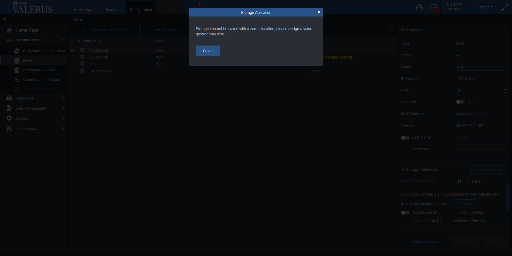

Total Tests
Total Steps
Total Time Taken (Current Run)
0h 43m 14s+632ms
Total Time Taken (Overall)
0h 43m 14s+632ms
Start
2020-02-07 11:56:07
End
2020-02-07 12:39:22
Pass Percentage
Environment
| Param | Value |
|---|---|
| User Name | popatb |
| OS | Windows 10 |
| Java Version | 1.8.0_202 |
| Host Name | BORSE-PC |
Tests
-
AddNVRManuallyWithSecuredPortTest fail2020-02-07 12:25:04 2020-02-07 12:28:27 0h 3m 22s+898ms
Status Timestamp Details 12:25:06 Delete NVR172.20.1.46 12:25:29 NVR172.20.1.46 is deleted 12:25:31 Open Add NVR Manually window 12:25:32 Input into IPAddress field 172.20.1.46 12:25:33 Input into Port field 172.20.1.46 12:25:35 Input into UserName field ADMIN 12:25:37 Input into password field 1234 12:25:37 Apply NVR adding 12:28:23 Assert that NVRs count increased by 1 12:28:27 java.lang.AssertionError: expected [2] but found [1] at org.testng.Assert.fail(Assert.java:97) at org.testng.Assert.assertEqualsImpl(Assert.java:136) at org.testng.Assert.assertEquals(Assert.java:118) at org.testng.Assert.assertEquals(Assert.java:839) at org.testng.Assert.assertEquals(Assert.java:849) at testcases.NVRsTest.AddNVRManuallyWithSecuredPortTest(NVRsTest.java:808) at sun.reflect.NativeMethodAccessorImpl.invoke0(Native Method) at sun.reflect.NativeMethodAccessorImpl.invoke(NativeMethodAccessorImpl.java:62) at sun.reflect.DelegatingMethodAccessorImpl.invoke(DelegatingMethodAccessorImpl.java:43) at java.lang.reflect.Method.invoke(Method.java:498) at org.testng.internal.MethodInvocationHelper.invokeMethod(MethodInvocationHelper.java:133) at org.testng.internal.TestInvoker.invokeMethod(TestInvoker.java:584) at org.testng.internal.TestInvoker.invokeTestMethod(TestInvoker.java:172) at org.testng.internal.MethodRunner.runInSequence(MethodRunner.java:46) at org.testng.internal.TestInvoker$MethodInvocationAgent.invoke(TestInvoker.java:804) at org.testng.internal.TestInvoker.invokeTestMethods(TestInvoker.java:145) at org.testng.internal.TestMethodWorker.invokeTestMethods(TestMethodWorker.java:146) at org.testng.internal.TestMethodWorker.run(TestMethodWorker.java:128) at java.util.ArrayList.forEach(ArrayList.java:1257) at org.testng.TestRunner.privateRun(TestRunner.java:770) at org.testng.TestRunner.run(TestRunner.java:591) at org.testng.SuiteRunner.runTest(SuiteRunner.java:402) at org.testng.SuiteRunner.runSequentially(SuiteRunner.java:396) at org.testng.SuiteRunner.privateRun(SuiteRunner.java:355) at org.testng.SuiteRunner.run(SuiteRunner.java:304) at org.testng.SuiteRunnerWorker.runSuite(SuiteRunnerWorker.java:53) at org.testng.SuiteRunnerWorker.run(SuiteRunnerWorker.java:96) at org.testng.TestNG.runSuitesSequentially(TestNG.java:1180) at org.testng.TestNG.runSuitesLocally(TestNG.java:1102) at org.testng.TestNG.runSuites(TestNG.java:1032) at org.testng.TestNG.run(TestNG.java:1000) at org.testng.remote.AbstractRemoteTestNG.run(AbstractRemoteTestNG.java:115) at org.testng.remote.RemoteTestNG.initAndRun(RemoteTestNG.java:251) at org.testng.remote.RemoteTestNG.main(RemoteTestNG.java:77)
12:28:27 Screenshot is below: 
-
ChangeIPAdressAndCheckStatusTest fail2020-02-07 12:29:17 2020-02-07 12:29:25 0h 0m 7s+891ms
Status Timestamp Details 12:29:17 Changing NVR IP Address from 172.20.1.46 to IP and press 'Save' on the 'Unsaved changes' window 12:29:17 Click on 172.20.1.46 NVR 12:29:20 Change IP Address for IP 12:29:22 Check that Cancel button is enable after name changes 12:29:22 Check that Save button is enable after name changes 12:29:22 Click on Save button 12:29:25 Check that change is saved 12:29:25 java.lang.AssertionError: expected [172.20.1.46IP] but found [IP] at org.testng.Assert.fail(Assert.java:97) at org.testng.Assert.assertEqualsImpl(Assert.java:136) at org.testng.Assert.assertEquals(Assert.java:118) at org.testng.Assert.assertEquals(Assert.java:575) at org.testng.Assert.assertEquals(Assert.java:585) at testcases.NVRsTest.ChangeIPAdressAndCheckStatusTest(NVRsTest.java:1356) at sun.reflect.NativeMethodAccessorImpl.invoke0(Native Method) at sun.reflect.NativeMethodAccessorImpl.invoke(NativeMethodAccessorImpl.java:62) at sun.reflect.DelegatingMethodAccessorImpl.invoke(DelegatingMethodAccessorImpl.java:43) at java.lang.reflect.Method.invoke(Method.java:498) at org.testng.internal.MethodInvocationHelper.invokeMethod(MethodInvocationHelper.java:133) at org.testng.internal.TestInvoker.invokeMethod(TestInvoker.java:584) at org.testng.internal.TestInvoker.invokeTestMethod(TestInvoker.java:172) at org.testng.internal.MethodRunner.runInSequence(MethodRunner.java:46) at org.testng.internal.TestInvoker$MethodInvocationAgent.invoke(TestInvoker.java:804) at org.testng.internal.TestInvoker.invokeTestMethods(TestInvoker.java:145) at org.testng.internal.TestMethodWorker.invokeTestMethods(TestMethodWorker.java:146) at org.testng.internal.TestMethodWorker.run(TestMethodWorker.java:128) at java.util.ArrayList.forEach(ArrayList.java:1257) at org.testng.TestRunner.privateRun(TestRunner.java:770) at org.testng.TestRunner.run(TestRunner.java:591) at org.testng.SuiteRunner.runTest(SuiteRunner.java:402) at org.testng.SuiteRunner.runSequentially(SuiteRunner.java:396) at org.testng.SuiteRunner.privateRun(SuiteRunner.java:355) at org.testng.SuiteRunner.run(SuiteRunner.java:304) at org.testng.SuiteRunnerWorker.runSuite(SuiteRunnerWorker.java:53) at org.testng.SuiteRunnerWorker.run(SuiteRunnerWorker.java:96) at org.testng.TestNG.runSuitesSequentially(TestNG.java:1180) at org.testng.TestNG.runSuitesLocally(TestNG.java:1102) at org.testng.TestNG.runSuites(TestNG.java:1032) at org.testng.TestNG.run(TestNG.java:1000) at org.testng.remote.AbstractRemoteTestNG.run(AbstractRemoteTestNG.java:115) at org.testng.remote.RemoteTestNG.initAndRun(RemoteTestNG.java:251) at org.testng.remote.RemoteTestNG.main(RemoteTestNG.java:77)
12:29:25 Screenshot is below: 
-
ChangeSecuredAndCheckStatusTest fail2020-02-07 12:30:15 2020-02-07 12:33:59 0h 3m 43s+465ms
Status Timestamp Details 12:32:02 Switch ON secured toggle-switch 12:32:02 Press on Save 12:32:05 Checking that NVR status is Communication Failure 12:32:05 Changing NVR Port from 80 to 443 12:32:08 Press on Save 12:33:59 Checking that NVR status is V 12:33:59 java.lang.AssertionError: expected [V] but found [NVR cannot be synced. Its system unique id belongs to another NVR.] at org.testng.Assert.fail(Assert.java:97) at org.testng.Assert.assertEqualsImpl(Assert.java:136) at org.testng.Assert.assertEquals(Assert.java:118) at org.testng.Assert.assertEquals(Assert.java:575) at org.testng.Assert.assertEquals(Assert.java:585) at testcases.NVRsTest.ChangeSecuredAndCheckStatusTest(NVRsTest.java:1533) at sun.reflect.NativeMethodAccessorImpl.invoke0(Native Method) at sun.reflect.NativeMethodAccessorImpl.invoke(NativeMethodAccessorImpl.java:62) at sun.reflect.DelegatingMethodAccessorImpl.invoke(DelegatingMethodAccessorImpl.java:43) at java.lang.reflect.Method.invoke(Method.java:498) at org.testng.internal.MethodInvocationHelper.invokeMethod(MethodInvocationHelper.java:133) at org.testng.internal.TestInvoker.invokeMethod(TestInvoker.java:584) at org.testng.internal.TestInvoker.invokeTestMethod(TestInvoker.java:172) at org.testng.internal.MethodRunner.runInSequence(MethodRunner.java:46) at org.testng.internal.TestInvoker$MethodInvocationAgent.invoke(TestInvoker.java:804) at org.testng.internal.TestInvoker.invokeTestMethods(TestInvoker.java:145) at org.testng.internal.TestMethodWorker.invokeTestMethods(TestMethodWorker.java:146) at org.testng.internal.TestMethodWorker.run(TestMethodWorker.java:128) at java.util.ArrayList.forEach(ArrayList.java:1257) at org.testng.TestRunner.privateRun(TestRunner.java:770) at org.testng.TestRunner.run(TestRunner.java:591) at org.testng.SuiteRunner.runTest(SuiteRunner.java:402) at org.testng.SuiteRunner.runSequentially(SuiteRunner.java:396) at org.testng.SuiteRunner.privateRun(SuiteRunner.java:355) at org.testng.SuiteRunner.run(SuiteRunner.java:304) at org.testng.SuiteRunnerWorker.runSuite(SuiteRunnerWorker.java:53) at org.testng.SuiteRunnerWorker.run(SuiteRunnerWorker.java:96) at org.testng.TestNG.runSuitesSequentially(TestNG.java:1180) at org.testng.TestNG.runSuitesLocally(TestNG.java:1102) at org.testng.TestNG.runSuites(TestNG.java:1032) at org.testng.TestNG.run(TestNG.java:1000) at org.testng.remote.AbstractRemoteTestNG.run(AbstractRemoteTestNG.java:115) at org.testng.remote.RemoteTestNG.initAndRun(RemoteTestNG.java:251) at org.testng.remote.RemoteTestNG.main(RemoteTestNG.java:77)
12:33:59 Screenshot is below: 
-
SortingNVRsByIPAdressTest pass2020-02-07 12:34:49 2020-02-07 12:36:03 0h 1m 13s+414ms
Status Timestamp Details 12:34:49 Sorting NVRs by IP Adress 12:36:03 Check that the first Element became the last 12:36:03 Check that the last Element became the first 12:36:03 Test is passed -
SortingNVRsByNameTest pass2020-02-07 12:37:09 2020-02-07 12:37:14 0h 0m 5s+13ms
Status Timestamp Details 12:37:09 Sorting NVRs by Name 12:37:14 Check that the first Element became the last 12:37:14 Check that the last Element became the first 12:37:14 Test is passed -
SwitchOffStorageDefinitionsAndPressNoTest fail2020-02-07 12:38:05 2020-02-07 12:38:23 0h 0m 18s+616ms
Status Timestamp Details 12:38:05 If status for NVR 172.20.1.42 isn't 'Online' than delete it 12:38:06 If NVR 172.20.1.42 isn't exist - add it 12:38:06 Click on 172.20.1.42 NVR 12:38:08 Switch local drive toggle switch 12:38:08 Press save button 12:38:11 Switch OFF local drive toggle switch 12:38:12 Click NO on dialog window 12:38:23 Check that storage definitions status is ON 12:38:23 java.lang.AssertionError: did not expect to find [true] but found [false] at org.testng.Assert.fail(Assert.java:97) at org.testng.Assert.failNotEquals(Assert.java:969) at org.testng.Assert.assertTrue(Assert.java:43) at org.testng.Assert.assertTrue(Assert.java:53) at testcases.NVRsTest.SwitchOffStorageDefinitionsAndPressNoTest(NVRsTest.java:1775) at sun.reflect.NativeMethodAccessorImpl.invoke0(Native Method) at sun.reflect.NativeMethodAccessorImpl.invoke(NativeMethodAccessorImpl.java:62) at sun.reflect.DelegatingMethodAccessorImpl.invoke(DelegatingMethodAccessorImpl.java:43) at java.lang.reflect.Method.invoke(Method.java:498) at org.testng.internal.MethodInvocationHelper.invokeMethod(MethodInvocationHelper.java:133) at org.testng.internal.TestInvoker.invokeMethod(TestInvoker.java:584) at org.testng.internal.TestInvoker.invokeTestMethod(TestInvoker.java:172) at org.testng.internal.MethodRunner.runInSequence(MethodRunner.java:46) at org.testng.internal.TestInvoker$MethodInvocationAgent.invoke(TestInvoker.java:804) at org.testng.internal.TestInvoker.invokeTestMethods(TestInvoker.java:145) at org.testng.internal.TestMethodWorker.invokeTestMethods(TestMethodWorker.java:146) at org.testng.internal.TestMethodWorker.run(TestMethodWorker.java:128) at java.util.ArrayList.forEach(ArrayList.java:1257) at org.testng.TestRunner.privateRun(TestRunner.java:770) at org.testng.TestRunner.run(TestRunner.java:591) at org.testng.SuiteRunner.runTest(SuiteRunner.java:402) at org.testng.SuiteRunner.runSequentially(SuiteRunner.java:396) at org.testng.SuiteRunner.privateRun(SuiteRunner.java:355) at org.testng.SuiteRunner.run(SuiteRunner.java:304) at org.testng.SuiteRunnerWorker.runSuite(SuiteRunnerWorker.java:53) at org.testng.SuiteRunnerWorker.run(SuiteRunnerWorker.java:96) at org.testng.TestNG.runSuitesSequentially(TestNG.java:1180) at org.testng.TestNG.runSuitesLocally(TestNG.java:1102) at org.testng.TestNG.runSuites(TestNG.java:1032) at org.testng.TestNG.run(TestNG.java:1000) at org.testng.remote.AbstractRemoteTestNG.run(AbstractRemoteTestNG.java:115) at org.testng.remote.RemoteTestNG.initAndRun(RemoteTestNG.java:251) at org.testng.remote.RemoteTestNG.main(RemoteTestNG.java:77)
12:38:23 Screenshot is below: -
SwitchStorageDefinitionsTest fail2020-02-07 12:39:14 2020-02-07 12:39:21 0h 0m 7s+261ms
Status Timestamp Details 12:39:14 If status for NVR 172.20.1.42 isn't 'Online' than delete it 12:39:15 If NVR 172.20.1.42 isn't exist - add it 12:39:15 Click on 172.20.1.42 NVR 12:39:17 Switch local drive toggle switch 12:39:17 Check that Cancel button is enable after name changes 12:39:18 Check that Save button is enabled after name changes 12:39:18 Click on Save button 12:39:20 Check that storage definitions status change is saved 12:39:21 Check that Cancel button is disabled after name changes 12:39:21 java.lang.AssertionError: did not expect to find [false] but found [true] at org.testng.Assert.fail(Assert.java:97) at org.testng.Assert.failNotEquals(Assert.java:969) at org.testng.Assert.assertFalse(Assert.java:65) at org.testng.Assert.assertFalse(Assert.java:75) at testcases.NVRsTest.SwitchStorageDefinitionsTest(NVRsTest.java:1837) at sun.reflect.NativeMethodAccessorImpl.invoke0(Native Method) at sun.reflect.NativeMethodAccessorImpl.invoke(NativeMethodAccessorImpl.java:62) at sun.reflect.DelegatingMethodAccessorImpl.invoke(DelegatingMethodAccessorImpl.java:43) at java.lang.reflect.Method.invoke(Method.java:498) at org.testng.internal.MethodInvocationHelper.invokeMethod(MethodInvocationHelper.java:133) at org.testng.internal.TestInvoker.invokeMethod(TestInvoker.java:584) at org.testng.internal.TestInvoker.invokeTestMethod(TestInvoker.java:172) at org.testng.internal.MethodRunner.runInSequence(MethodRunner.java:46) at org.testng.internal.TestInvoker$MethodInvocationAgent.invoke(TestInvoker.java:804) at org.testng.internal.TestInvoker.invokeTestMethods(TestInvoker.java:145) at org.testng.internal.TestMethodWorker.invokeTestMethods(TestMethodWorker.java:146) at org.testng.internal.TestMethodWorker.run(TestMethodWorker.java:128) at java.util.ArrayList.forEach(ArrayList.java:1257) at org.testng.TestRunner.privateRun(TestRunner.java:770) at org.testng.TestRunner.run(TestRunner.java:591) at org.testng.SuiteRunner.runTest(SuiteRunner.java:402) at org.testng.SuiteRunner.runSequentially(SuiteRunner.java:396) at org.testng.SuiteRunner.privateRun(SuiteRunner.java:355) at org.testng.SuiteRunner.run(SuiteRunner.java:304) at org.testng.SuiteRunnerWorker.runSuite(SuiteRunnerWorker.java:53) at org.testng.SuiteRunnerWorker.run(SuiteRunnerWorker.java:96) at org.testng.TestNG.runSuitesSequentially(TestNG.java:1180) at org.testng.TestNG.runSuitesLocally(TestNG.java:1102) at org.testng.TestNG.runSuites(TestNG.java:1032) at org.testng.TestNG.run(TestNG.java:1000) at org.testng.remote.AbstractRemoteTestNG.run(AbstractRemoteTestNG.java:115) at org.testng.remote.RemoteTestNG.initAndRun(RemoteTestNG.java:251) at org.testng.remote.RemoteTestNG.main(RemoteTestNG.java:77)
12:39:21 Screenshot is below: 
{kind=link}